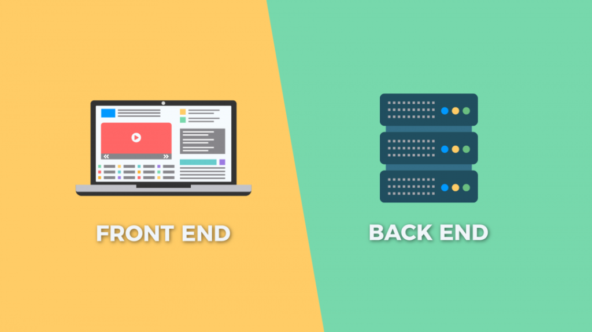

CHAPTER 1
MẤY CƯNG BIẾT GÌ VỀ WEB?
Nguồn: TopDev
Giới thiệu qua chút:
Chào mừng mấy cưng đã đọc được cuốn ebook đầu tiên của Melta Edu, và cũng là cuốn ebook bàn về lĩnh vực giúp các cưng PHÁT TRIỂN KỸ NĂNG SỰ NGHIỆP khi ở trong nhóm he he.
Nói vậy chứ thời đại mới này có khá NHIỀU KỸ NĂNG để giúp phát triển, lập trình là một trong số đó. Bên cạnh lập trình, team sẽ cố gắng phát triển các ebook về kỹ năng khác như HOW TO SALES FOR DUMMIES nè, hoặc CONTENT MARKETING FOR DUMMIES,..
Nói lan man vậy thôi, chúng ta sẽ quay lại chủ đề chính, chúc các cưng sớm thành thạo các SKILLS trên con đường sự nghiệp nha!
Hiểu về web dư lào?
Key word gồm có:
Front-end
Back-end
HTML và CSS
Đây không phải sách giáo khoa, đây là sách cho người biết đọc! Vì thế chúng ta sẽ giao tiếp với nhau như những người bạn chứ không dùng từ hàn lâm.
Nguồn: Got It AI
Web được cấu tạo bởi 2 thành phần chính: back-end và front-end. Trong đó hiểu từng phần là như này:
1, Front-end: giống như căn nhà, nó là vẻ ngoài căn nhà, đặc điểm hình thức, nội thất trông dư lào, đẹp không, style gì, châu Âu cổ điển hay châu Á thời đồ đá, bla bla,.. và hiểu đơn giản là vẻ ngoài.
Lập trình viên front-end là người trang trí, sắp xếp đồ đạc cho nó có bố cục, nhìn đẹp mắt chứ không nhiễu loạn.
Có 3 ngôn ngữ chính dành cho front-end để lập trình: HTML, CSS và JavaScript. Trong đó HTML và CSS không hẳn là ngôn ngữ lập trình, chỉ có JavaScript là ngôn ngữ lập trình.

Nguồn: Mona Media
2, Back-end: hiểu đơn giản nó là nơi chứa dữ liệu trang web, còn hình dung ra căn nhà thì nó như kiểu món nội thất nào được trưng bày, dùng để làm gì, kiểu đèn bàn học không dùng để học mà dùng để soi móng tay.
Lập trình viên back-end sẽ là người quản lý dữ liệu (quản lý đồ nội thất đấy), sắp xếp (xem đèn bàn học sẽ để vào bàn ăn hay nhà tắm),..
Hội back-end sẽ dùng ngôn ngữ lập trình khác hội front-end, mà nó nhiều lắm, không liệt kê ra đâu he he.

Nguồn: Mona Media
* Chúng ta có thể lựa chọn một trong hai, hoặc làm cả hai để có biệt danh Full-stack cho nó ngầu
Đi sâu hơn chút nào
Vậy tại sao HTML và CSS không phải ngôn ngữ lập trình?
HTML có nghĩa là Hyper Text Markup Language, ngôn ngữ đánh dấu siêu văn bản, nó giống kiểu bạn gõ Word thôi chứ không phải ngôn ngữ lập trình.
Còn CSS có nghĩa là Cascading Style Sheet, giống kiểu make-up với trang điểm cho HTML thôi. Hình dung bạn gõ tên Đàm Vĩnh Hưng thì bạn có trang điểm cho nó đậm nhạt, font chữ như nào, lơ lửng hay chìm sâu,.. các kiểu, đó đó hiểu chưa?
Để có thể là một ngôn ngữ lập trình phải tạo được ra lệnh, thực hiện được mấy cái logic cùi bắp gì đó và cần có tư duy. Đối với HTML với CSS thì bạn cần có tư duy, nhưng nó giống kiểu tư duy về hình khối hoặc màu sắc đè lên nhau í (bao giờ thực hành thì sẽ giải thích cho).
Tác giả bắt đầu mỏi tay
Tạm thời giới thiệu qua như thế thôi, trong bài tới thì sẽ bàn về chủ đề HTML và mấy con vợ hay được dùng.
Tác giả: Tường Chun